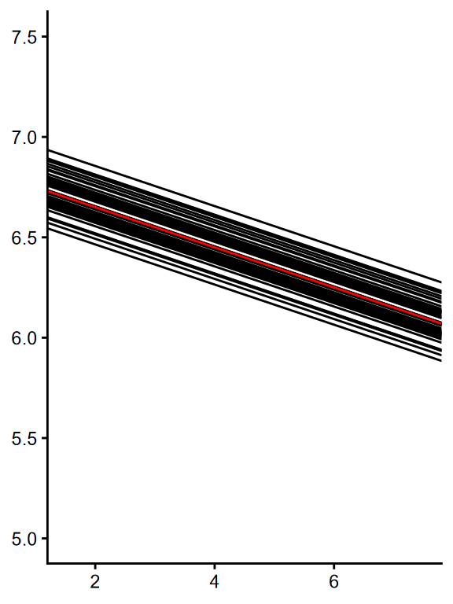
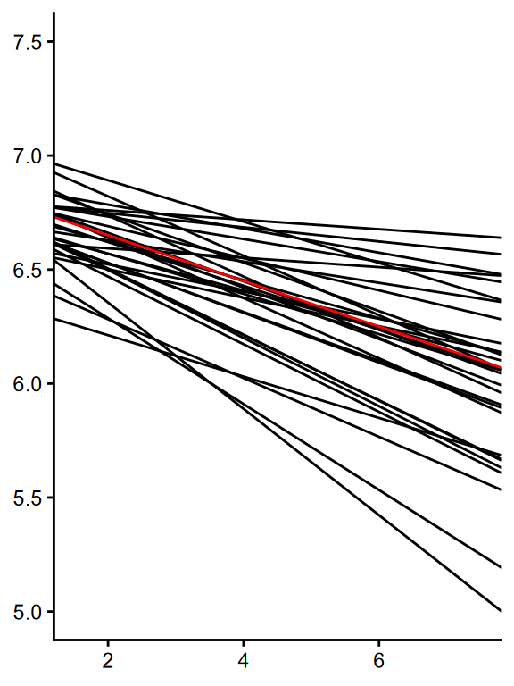

library(lme4) # for fitting LMMs
library(dplyr) # for data wrangling
library(tidyr) # for data wrangling
library(ggplot2) # for plotting3 Random Slopes
3.1 What are Random Slopes?
In the last section, we saw how we can use linear mixed-effects models to account for item and participant variability simultaneously. We simulated and modelled random intercepts, which aim to describe the degree to which individual items and participants differ from the average of their population. For example, participants may be faster or slower relative to the population of possible participants.
However, as well as different averages overall, participants may also differ in the size of the effect of word frequency. Some participants may show a larger effect than others. We can model these differences with random slopes. Like random intercepts, random slopes describe a deviation from the fixed-effect average. It is added to the fixed-effect slope before we multiply it by the predictor:
\[logRT_{ip} = \beta_0 + I_{0i} + P_{0p} + (\beta_1 + P_{1p}) Zipf_{ip} + e_{ip}\]
For now (ominous foreshadowing), we will simulate the random effects independently. This means that we just draw \(P_{1p}\) from a new independent normal distribution:
\[\begin{aligned} I_{0i} &\sim \mathcal{N}(0, \sigma_{I0}) \\ P_{0p} &\sim \mathcal{N}(0, \sigma_{P0}) \\ P_{1p} &\sim \mathcal{N}(0, \sigma_{P1}) \\ e_{ip} &\sim \mathcal{N}(0, \sigma_e) \end{aligned}\]
Note
The random-effect structure for the items is unchanged from before. It doesn’t make sense to simulate or estimate a random slope for the effect of zipf for each item, because each item can only have one zipf value.
3.2 Packages
We’ll use the following packages in this section:
3.3 Defining Parameters
This time, try to write the code to simulate the data yourself, using the last section as a guide.
The parameters should be the same as before, except now we also simulate \(\sigma_{P1}\) (s_P1). I suggest a value of 0.04.
Show solution
# Fixed-effect intercept and slope
# (same as the parameters in the section on linear models)
b_0 <- 6.85
b_1 <- -0.1
# SD of per-item random intercepts
s_I0 <- 0.08
# SD of per-participant random intercepts
s_P0 <- 0.16
s_P1 <- 0.04
# residual SD
s_e <- 0.333.4 Simulating Items and Participants
We also simulate items and participants as before, except we now also simulate random slopes for participants, P_1p. Using the code from the last section as a starting place, add code to simulate P_1p.
Show solution
# simulate 50 items
n_items <- 50
items <- tibble(
# item IDs
i_id = 1:n_items,
# item word frequencies
zipf = runif(n_items, 1.5, 7.5),
# item intercepts
I_0i = rnorm(n_items, 0, s_I0)
)
# simulate 30 participants
n_participants <- 30
participants <- tibble(
# participant IDs
p_id = 1:n_participants,
# participant intercepts
P_0p = rnorm(n_participants, 0, s_P0),
# participant slopes
P_1p = rnorm(n_participants, 0, s_P1)
)3.5 Visualising Random Effects
As before, let’s visualise the variability between items and participants in our simulated sample. The code to generate the plot showing items should be very similar, but the code for the participants will need tweaking to be able to generate the plot below.
You can see that whereas the effect of Zipf is constant for all items, our random slope means that there is now variability in the effect of Zipf for different participants.
Show solution
# (a)
ggplot(items) +
geom_abline(aes(intercept = b_0+I_0i, slope=b_1, group=i_id)) +
geom_abline(intercept=b_0, slope=b_1, colour="red") +
lims(x=c(1.5, 7.5), y=c(5, 7.5))
# (b)
ggplot(participants) +
geom_abline(aes(intercept = b_0+P_0p, slope=b_1+P_1p, group=p_id)) +
geom_abline(intercept=b_0, slope=b_1, colour="red") +
lims(x=c(1.5, 7.5), y=c(5, 7.5))

As before, the red line shows the fixed effect, while the black lines show variability between (a) items and (b) participants.
3.6 Simulating Trials
This section is actually identical to what we did before. We get all combinations of items and participants, and then simulate \(e_{ip}\) (e_ip) as random noise of mean 0 and SD \(\sigma_e\) (s_e).
# generate trials
trials <- crossing(items, participants) |>
mutate(e_ip = rnorm(n(), 0, s_e))
# print the first few rows
print(trials)# A tibble: 1,500 × 7
i_id zipf I_0i p_id P_0p P_1p e_ip
<int> <dbl> <dbl> <int> <dbl> <dbl> <dbl>
1 1 2.14 -0.0319 1 -0.0845 -0.0483 0.243
2 1 2.14 -0.0319 2 -0.0191 0.0506 -0.00215
3 1 2.14 -0.0319 3 -0.119 0.0193 -0.174
4 1 2.14 -0.0319 4 -0.457 0.00928 -0.0368
5 1 2.14 -0.0319 5 -0.129 0.0535 -0.0455
6 1 2.14 -0.0319 6 0.232 -0.0304 -0.0161
7 1 2.14 -0.0319 7 -0.108 -0.00698 0.200
8 1 2.14 -0.0319 8 -0.0559 -0.0449 0.0264
9 1 2.14 -0.0319 9 0.155 -0.0339 0.360
10 1 2.14 -0.0319 10 -0.0665 -0.0429 0.181
# ℹ 1,490 more rows3.7 Simulating Responses
Simulating responses is again similar to what we did before, except we now also want to include the random slopes in the formula.
Show solution
# simulate response times
trials <- mutate(
trials,
log_rt = b_0 + I_0i + P_0p + (b_1 + P_1p) * zipf + e_ip
)
# print the first few rows
print(trials)# A tibble: 1,500 × 8
i_id zipf I_0i p_id P_0p P_1p e_ip log_rt
<int> <dbl> <dbl> <int> <dbl> <dbl> <dbl> <dbl>
1 1 2.14 -0.0319 1 -0.0845 -0.0483 0.243 6.66
2 1 2.14 -0.0319 2 -0.0191 0.0506 -0.00215 6.69
3 1 2.14 -0.0319 3 -0.119 0.0193 -0.174 6.35
4 1 2.14 -0.0319 4 -0.457 0.00928 -0.0368 6.13
5 1 2.14 -0.0319 5 -0.129 0.0535 -0.0455 6.54
6 1 2.14 -0.0319 6 0.232 -0.0304 -0.0161 6.75
7 1 2.14 -0.0319 7 -0.108 -0.00698 0.200 6.68
8 1 2.14 -0.0319 8 -0.0559 -0.0449 0.0264 6.48
9 1 2.14 -0.0319 9 0.155 -0.0339 0.360 7.05
10 1 2.14 -0.0319 10 -0.0665 -0.0429 0.181 6.63
# ℹ 1,490 more rows3.8 Parameter Retrieval
To fit a model that can estimate the values we originally simulated, we just have to include the random slope in the random-effect structure.
Show solution
m <- lmer(
log_rt ~ 1 + zipf +
(1 | i_id) +
(1 + zipf || p_id),
data = trials
)
summary(m)Linear mixed model fit by REML ['lmerMod']
Formula: log_rt ~ 1 + zipf + (1 | i_id) + ((1 | p_id) + (0 + zipf | p_id))
Data: trials
REML criterion at convergence: 1120.9
Scaled residuals:
Min 1Q Median 3Q Max
-3.0264 -0.6575 0.0222 0.6702 4.1439
Random effects:
Groups Name Variance Std.Dev.
i_id (Intercept) 0.007438 0.08624
p_id (Intercept) 0.036427 0.19086
p_id.1 zipf 0.002824 0.05314
Residual 0.107719 0.32821
Number of obs: 1500, groups: i_id, 50; p_id, 30
Fixed effects:
Estimate Std. Error t value
(Intercept) 6.79393 0.05434 125.037
zipf -0.09847 0.01290 -7.631
Correlation of Fixed Effects:
(Intr)
zipf -0.473
Note
We write (1 + zipf || p_id) rather than (1 + zipf | p_id) to tell lme4 to not estimate the random correlations, because we simulated data with independent participant random effects. In the next section on random correlations, we will simulate and estimate participant random effects from multivariate normal distributions.